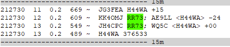
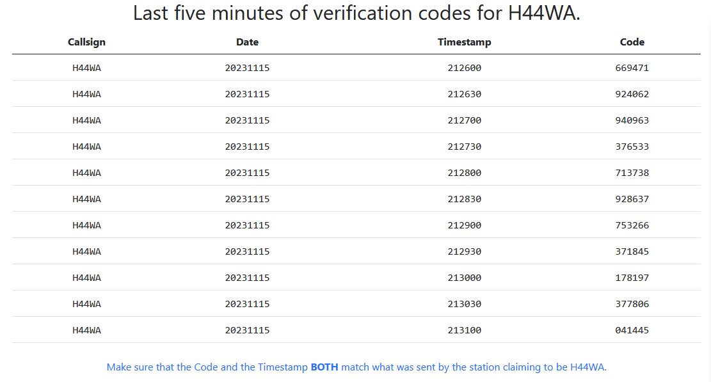

[Date Prev][Date Next][Thread Prev][Thread Next][Date Index][Thread Index]
[NCDXC Chat] H44WA FT8 Authenticator
Some of you may notice the last line in this image when working the
*real* H44WA. H44WA 376533.
It's a verification code that authenticates it is really them.

To validate go to https://www.9dx.cc/verify/H44WA
You can see it matches the 4th line down. It's really them!

This is custom code that was added to WSJT-X and uses the same
principle that creates one time passwords using tools like Google
Authenticator. Cool stuff.
73,
Steve
W1SRD